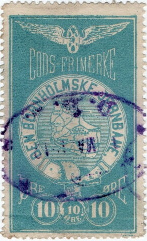
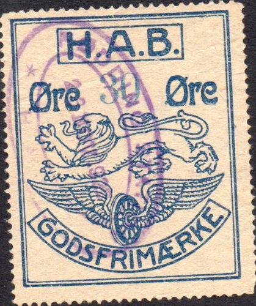

1903 issue; 2 values were issued: 10 o black and blue on red and 20 o black and green on brown
Return To Catalogue - Denmark - Denmark Railway Stamps, overview
Note: on my website many of the
pictures can not be seen! They are of course present in the
catalogue;
contact me if you want to purchase it.

1903 issue; 2 values were issued: 10 o black and blue on red and
20 o black and green on brown


1903 Ebeltoft-Trustrup; station building at Ebeltoft. I have also
seen 10 o red and "90" on 10 o red.
In 1944 more stamps were issued with buildings.

50 o brown, the Ryomgaard Gerrild Grenaa Jernbane (R.G.G.J.)
issued similar stamps.


1897 issue. The 20 o exists in several types (number of windows
in the train, with or withoug stop after "JERNBANE").
Gribskov issued its first stamps in 1880.

1880 issue(?) for parcels: 20 o red
1880 Large "S" with "DS" in fancy letters around it (for letters)


1880 issue: Large "S" with smaller "GD". I've
seen other stamp with the violet "HE" cancel as seen on
the 50 o yellow above.
The following values exist: 1 o black, 2 o brown, 5 o green, 10 o blue, 20 o red, 50 o yellow, 1 Kr grey and 5 Kr blue. A 10 Kr red should also exist?
1925 issue:


1925 issue: "GRIBSKOV BANEN" 25 o red. Also a
"25" and bars on 60 o blue. The month and year of issue
is printed on some of these stamps at the bottom left.
Issued were from 1925 to 1967:
Without any date in the bottom left: 10 o green, 15 o orange, 25
o red, 25 o brown, 40 o grey, 50 o blue.
With overprint: "10 Øre" (red) on 40 o brown (see
image above, 4 types of overprint), "25" in a circle
(violet) on 40 o brown (see image above), "60" on 10 o
green.
With dates in the bottom left:
"I 1935": 10 o green, 25 o orange, 40
o grey, 50 o blue, "60" on 10 o green, 110 (4 types) on
10 o green (1967).
"I 1939": 60 o green; 50 (two types)
on 60 o green, 225 on 60 o green
"1940": 25 o orange, 40 o grey;
"70" on 40 o grey, 85 on 40 o grey, 225 on 40 o grey
"VII 1940": 50 o blue
"I 1942": 25 o orange, 50 o blue; 75
on 25 o orange, 100 (2 types) on 25 o orange, 150 o on 25 o
orange
"VIII 1944": 50 o blue, 75 o green, 60
(red) on 50 o blue, 90 on 50 o blue
"VIII 1946": 50 o red, 60 o blue, 90 o
green; 75 on 90 o green, 100 (two types) on 90 o green, 150 (two
types, see image above) on 50 o red, 25 and bars on 60 blue (see
image above), 75 on 60 o blue, 200 on 50 o red, 75 on 60 o blue,
150 (3 types) on 90 o green, 150 (violet) on 50 o red, 150
(violet) on 60 o blue
"V 1951": 70 o light blue; 80 on 70 o
light blue, 150 (two types) on 80 on 70 o light blue, 150 on 70 o
light blue, 200 on 70 o light blue
"VII 1956": 90 o green, 100 o grey;
125 (two types) on 90 o green, 150 (3 types) on 90 o green, 150
(violet) on 90 o green, 150 (violet, 2 types) on 125 on 90 o
green


Beach scene
1963 Inscription
"GRIBSKOVBANEN" with year, beach scene, I have seen:
100 o red and black, 175 o green and black, 250 o blue and black,
325 o orange and black, 330 o green and black (1967)
150 on 100 o, 200 on 175 o, 225 on 250, 300 on 325,
"600" on 325 o orange and black, "720" on 700
o violet and black
200 on 150 on 100 o, 440 on 225 on 250, 550 on 300 on 325,
"900" on "200" on 175 o green and black
"600" on "560" on "550" on
"300" on 325 o orange and black (see image above)
1969: 400 o green and black, "300" on
250 o red and black, "1300" on "720" on 700 o
violet and black
1970: 820 o grey and black; "11,-" on
"800" on 820 o grey and black
No date indicated (1978?) 1 Kr yellow and black, 5 Kr yellow,
black and red
1975: 10.00 yellow and black, 12.00 yellow,
black and violet, 17.00 yellow, black and green, 20.00 yellow,
black and blue.
1979: 18.00 yellow and black, 21.00 yellow and
black.
1903:

1903 issue
The following values exist in this 1903 issue:
With "GODS FRIMAERKE": 25 o red, "35" (green)
on 25 o red (8 types of overprint), "90 Øre." (blue)
on 25 o red, "40" (violet in a circle) on 25 o red
With "TILLAEGS FRIMAERKE": 10 o red, 50 o on 10 o (7
types of overprint), "35" (green) on 10 o (8 types of
overprint), "90 Øre." (blue) on "50" (2
types) on 10 o red
1920 issue: I've seen 40 o green, 60 o blue, 90 o orange,
"45" (red) on 40 o green, "25" on 60 o blue
and "50" on 90 o orange.



1920 "H.A.B. GODSFRIMAERKE" with lion and winged wheel.
In this "H.A.B." type the following
values exist:
Value printed seperately (thus often slightly different color):
30 o blue, 50 o yellow; "25" (violet) and 4 violet bars
on 30 o blue,
Printed in one time: 35 o yellow, 45 o green, 70 o brown, 90 o
red
Overprinted: "25" (violet) on 35 o yellow,
"25" (violet) on 45 o green, "25" (violet) on
70 o brown, "25" (violet) on 90 o red
"30" (violet) on 35 o yellow, "30" (violet)
on 45 o green, "30" (violet) on 70 o brown,
"50" (violet) on 45 o green, "50" (violet) on
90 o red, "55" (violet) on 70 o brown, "55"
(violet) on 90 o red
"20" (violet) on "55" (violet on 90 o red. .

1923 "H.A.J. GODSFRIMAERKE" with lion and winged wheel.
In this type ("H.A.J.") should exist:
25 o green, 30 o blue, 50 o yellow, 55 o red
Overprinted:
"20" (violet) on 25 o green, "20" (violet) on
"25" (violet) on 30 o blue, "20" (violet) on
30 o blue, "25" (violet) on 30 o blue, "30"
(violet) on 30 o blue, "40" (violet) on 50 o yellow,
"40" (violet) on 55 o red, "50" (violet) on
55 o red.
1926 design; 20 o red and 40 o blue. The values 20 o green and 25
o red should also exist
Sorry, no image available
Issued stamps from 1884 onwards, it was also called Aarhus - Hou Railway


1896 issue: 15 o green, 20 o red (note the different letter types
in the two stamps) and "15 ØRE" on 20 o red. The 20 c
also exist with the bottom "20"s upside down.


1903 (Here a stamp cancelled in Oder in 1912) In this design
exist: 10 o red, 25 o blue (note the two different
"25"s), 90 o green, "15 ØRE" on 10 o red,
"35 ØRE" on 10 o red, "75 ØRE" (red) on 90
o green
The above stamps exist with tiny control numbers in the lower right corner. The 10 o red also exists without a dot behind the word "ØRE".

1927 Smaller design, with small number at the bottom (here
"6")
In the above 1927 (to 1967) design exist: 25 ore blue (with numbers 1 to 7) 35 o orange (with numbers 1 to 4) 40 o violet (with numbers 1 to 6) 50 o red (with numbers 1 to 5) 60 o red (with numbers 1 to 5) 75 o green (with numbers 1 to 12?) 90 o brown (with numbers 1 or 2) 100 o grey (with numbers 1 to 10) 125 o blue (with numbers 1 to 4) 150 o red (with numbers 1 to 3) 330 o lilac (number 1) 440 o orange (number 1) 550 o brown (number 1) Several overprints also exist, for example: "165" on 100 o grey "500" on 440 o orange "600" on 40 o violet
I've seen a 1980's(?) design with a train and a
bus side by side in the values: 200 o green, 300 o lilac, 500 o
orange, 700 o blue, 1100 o brown
"800 øre" on 500 o orange, "900" on 700 o
blue, "1300" on 300 o lilac, "1500 øre" on
200 o green.
12 kr black on green, 14 kr black on red, 17 kr black on yellow
Also a 100 o red with a bus design and
"H.H.J.HORSENS ODDER RUTEN"
or "H.H.J. RUTENBILLER": 200 o green and 300 o blue
First issued stamps in 1902.


15 o blue. The Aarhus - Hammel - Thorsø railway issued very
similar stamps.
Existed from 1906 to 1916.

Design similar to the Danske Statsbaner stamps. A 15 o red also
exists.
Existed from 1916 to 1967.

Design similar to the Danske Statsbaner stamps
Later issues.
1980's In the imperforate train design (and
similar designs) I have seen: 100 o red and black (at least 5
different images of stations, Hellebaek, Alsgarde, Hornbaek,
Dronningsmolle, Gilleleje), 400 o red and black, 4 kr orange and
black, 10 kr blue and black, 15 kr blue and black (at least two
different station designs, probably all 5 designs exist).
1,00 kr lilac and black (inscription "1906 1916 1976"
In the 'castle design I have seen: 25 o black on lilac, 30 o
black, 60 o black on blue, 125 o black on blue.
{kind=link}